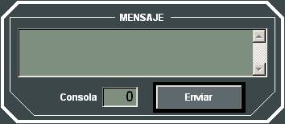

Pantalla de Control
En la Pantalla de Control, situada en el monitor inferior, se presentan de forma permanente Indicadores Generales, la Barra de Estado y los Paneles Resumen que muestran el estado de la unidad y de todos sus equipos. Actuando sobre la pantalla táctil, el operador puede acceder de forma directa a los Paneles de Detalle de cada uno de los equipos y actuar sobre los mismos.

Indicadores Generales:

En la parte superior de la Pantalla de Control se incluyen los Indicadores Generales se muestra al alumno información general del Ejercicio y de la Unidad, consistente en:
- Estado del ejercicio, indicado por led (Rojo: detenido, verde: ejecutándose)
- Nombre del ejercicio.
- Velocidad de ejecución del ejercicio, con dos dígitos enteros y un decimal.
- Icono que indica si se está grabando el Ejercicio en ejecución, o si se trata de reproducción.
- Número de la cabina y consola.
- Numeral y nombre de la unidad controlada.
- Categoría de la unidad controlada y bando al que pertenece, indicado por un icono distinto para unidades de superficie, submarinas, aviones, helicópteros, terrestres o bases y del color de su bando (Rojo, Azul o Blanco).
- Nacionalidad de la unidad controlada, indicada por icono de su bandera.
- Estado general de la unidad, indicado por un led (gris: no activa, verde: activa, amarillo: dañada o rojo: destruida).
- Porcentaje de daño infringido a la unidad (0 a 100%)
- Grupo fecha hora del ejercicio.
Pulsando en el Botón Unidad se le presenta el siguiente diálogo al Alumno mediante el que puede pasar a controlar otra de las unidades que tenga asignadas la consola:

Barra de Estado:

En la parte inferior de la Pantalla de Control se muestra esta Barra de Estado desde la que se pueden solicitar las siguientes acciones:
- Ver lista de últimos Mensajes recibidos desde otras consolas y últimos mensajes del sistema.
- Enviar mensaje a otra Consola.
- Realizar Foto de Audio (sólo disponible para Instructor).
Ver Manual de Instructor – Control de Ejercicio – Fotos de Ejercicio. - Realizar Foto Táctica (sólo disponible para Instructor).
Ver Manual de Instructor – Control de Ejercicio – Fotos de Ejercicio. - Volver a presentar el Panel de Detalle anterior ocultado automáticamente (sólo para Alumno).
- Mostrar Array de acciones del Instructor (sólo para Instructor)
Cuando se pulsa el botón Enviar se muestra el siguiente diálogo, mediante el que puede enviar un mensaje de texto a otra consola.

Paneles Resumen:
 En los Paneles Resumen de la unidad se le muestra al Alumno la información básica de cada uno de los equipos de los que dispone.
En los Paneles Resumen de la unidad se le muestra al Alumno la información básica de cada uno de los equipos de los que dispone.
En general, la información mínima que se le muestra es el nombre del equipo, su estado, la munición remanente para el caso de las armas, y las opciones de configuración más relevantes de cada equipo.
Toda esta información, se muestra mediante conjuntos de LED con distintos significados dependientes del color con el que lucen. Por ejemplo, los LEDs de estado tienen el siguiente significado en general:
 ON
ON
 STAND BY ON
STAND BY ON
 OFF / STAND BY OFF
OFF / STAND BY OFF
 DAÑADO
DAÑADO
 Equipo no presente
Equipo no presente
Pulsando sobre cualquier zona de los paneles resumen se accede a los paneles de detalle correspondientes.
Paneles de Detalle:
Mediante los Paneles de Detalles el Alumno puede acceder a toda la información de cada uno de los equipos así como todos los controles necesarios para llevar a cabo todas las acciones asociadas a las mismas: encendido, apagado, configuración, disparos, etc..
Normalmente se accede a un Panel de Detalle Principal para cada uno de los equipos, y a través de éste se abren otros subpaneles para llevar a cabo acciones como Disparos, Lanzamientos, etc..
A modo de ejemplo podemos ver el Panel de Detalle de Lanzamiento de Chaff: